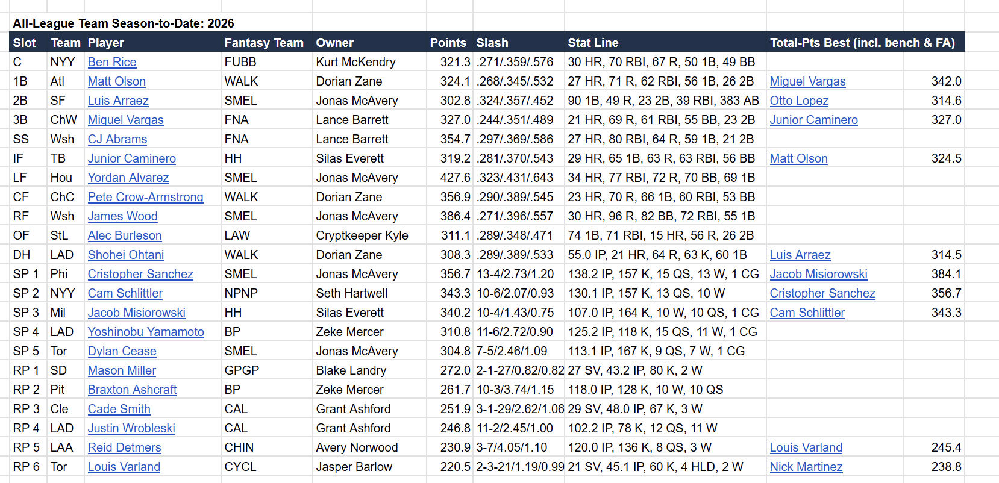
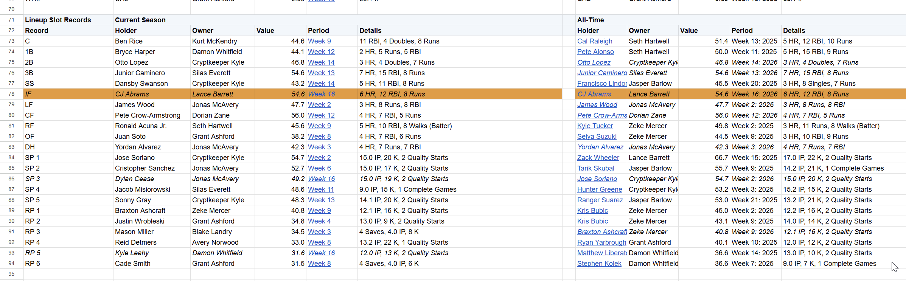
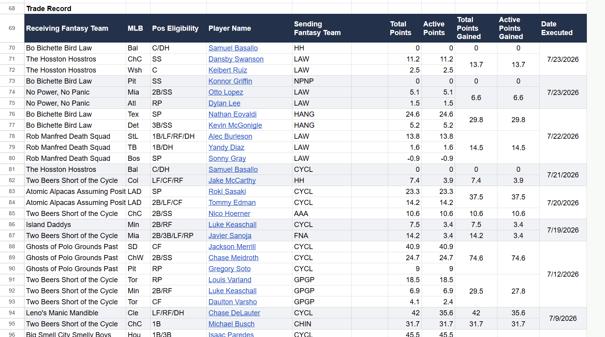
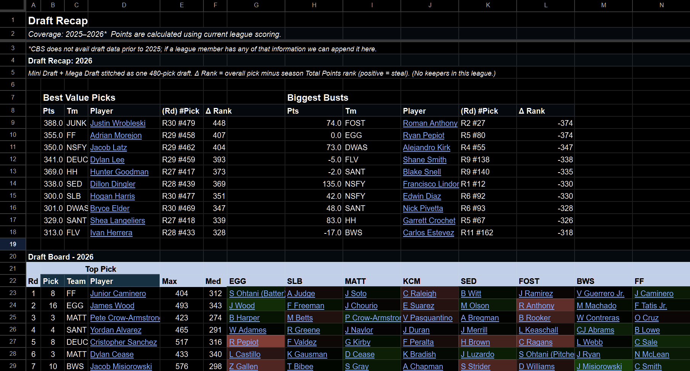
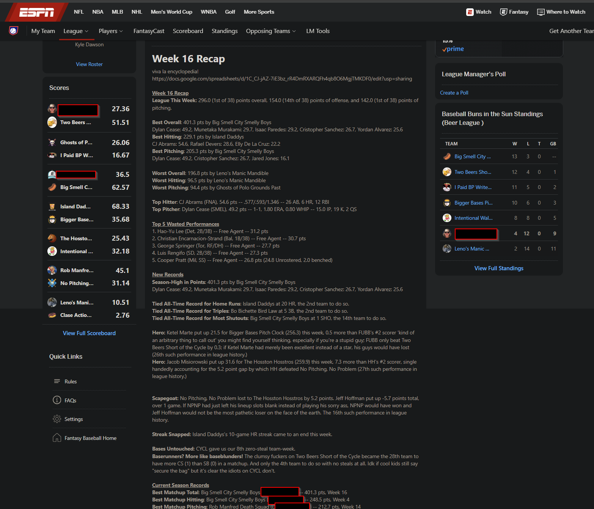

Records
Records are automatically tracked for every scored statistic and its corresponding rate stats.
Free & open source • Runs locally on your PC
Fantasy League Almanac turns the history your league accumulates into a Google Sheets Almanac specific to its teams, scoring and actual lineup decisions.
Downloads the Windows ZIP · v2.0.1. Release notes & checksum
No new accounts. Completely free. Writes to your Google Drive.

What it makes
Hi there, fantasy baseball folk! I’m building something that turns fantasy baseball leagues into a Google Sheets Almanac, specific to that league’s history. I started with ESPN-hosted points leagues, both season-points and head-to-head, and I’m looking for people willing to try it.
It produces all-time standings and records, matchup and draft history, a page for every team, a trade board, and other views built around what actually counted in your fantasy league -- not just the MLB stats your players accumulated along the way.
Here’s a read-only Almanac built from a real ESPN league. That’s the actual output as it stands today.
Records are automatically tracked for every scored statistic and its corresponding rate stats.
Sharper detail on the current season and historical totals, including who has performed best in drafts, trades and signings.
The Trades tab scores completed transactions and centralizes the league trading block, something ESPN’s site does not do.
The biggest busts and steals of the year, plus the historical value of each draft slot.
Each team’s highest producers by lineup slot this year, all-time and single-season, using that league’s scoring and roster restrictions.
Every contest in the league’s history, with a detailed breakdown and a link to its “official” box score.



Why I made it
What player has spent the most time on your team over the years? Which owner consistently finds value late in drafts? What was the biggest trade in league history? Which players can a franchise reasonably claim as “their guys”? Just how badly does our one friend in St. Louis overrate Cardinals players?
Fantasy baseball platforms retain much of the underlying data needed to answer these questions, but do not make it easy to access natively.
Current-season views help spot roster strengths, positional holes and plausible trade partners. Get a quick view, for example, of which team has had the worst shortstop production this year, or which has catcher-eligible points accruing on its bench. If your league allows pick trading, the Draft Recap gives an idea what those picks are actually worth.
Automate a weekly recap, currently formatted for ESPN’s stone-age front-page editor: the week’s best and worst performances, the points left on benches, the records broken, and whichever configurable oddities happened to fire that week. Implemented examples include the second-lowest scorer in a head-to-head league getting matched against the lowest and securing a lucky win; a player single-handedly accounting for his fantasy team’s margin of victory; or a team accruing more CS than SB.
I made it for my own leagues, got encouraging feedback, and eventually cleaned it up enough that somebody who didn’t build it could use it. It’s also become sort of a professional project to sharpen some data-engineering skills. It’s free and open source. There’s no “Almanac account” and nothing to pay for.
The original impulse
The weekly recap was where this started: a way to keep the fun part of writing league updates while letting the Almanac handle the bookkeeping.

Available now
I’m looking for volunteers who want an Almanac for their own league and want an early voice in what the product becomes. You get the free record book now; your experience and ideas help decide which platforms, formats and deeper history features I prioritize next.
The tested path for guided onboarding is Windows + ESPN points leagues, both head-to-head points and season-long. Draft histories and completed-auction histories both have tested paths.
The secure credential management & double-click launcher are the pieces that are currently Windows-specific. CBS points support is extremely far along in development -- I run it weekly for one of my personal leagues and am finalizing the standardization so that others can use it. Here is an anonymized, slightly out-of-date sample output from our real 25-year-old season-points league.
Tested path
How it works
Setup is meant to be straightforward.
Download one ZIP from the release page and extract it.
Open START_ALMANAC.cmd. The launcher creates its own Python environment.
Choose the league and seasons you want. For private ESPN leagues, the illustrated guide also walks through copying two session-cookie values from your browser. The launcher validates everything before saving.
At “Create the almanac now? [Y/n],” press Enter. The app builds the history and writes the workbook into your Google Drive. Keep an eye out for the authorization pop-up during this stage.
No Git chops, terminal commands, configuration-file editing, warehouse account or Google Cloud project required.
The guide has screenshots for every click of the session-cookie step. The process isn’t difficult, but it is slightly inelegant and will be simplified in a future release.
All league processing happens on your PC. ESPN cookies remain local, and the Google token is stored in Windows Credential Locker. There’s no hosted Almanac API, user database, telemetry, usage analytics or backend of mine receiving any of it. The Google permission applies only to workbooks the app creates, and every workbook begins private.
Google authorization: Google has approved brand verification for the Almanac’s OAuth project. You’ll still see Google’s standard permission screen during setup, but the app should no longer present an “unverified app” warning.
Three narrower boundaries
Each extracted folder is configured for one league. A second league means a second fresh extraction. We’ll simplify holding multiple leagues eventually, but for now that’s the structure.
Rotisserie is not currently supported. If that’s your format, please let me know, ideally through the format-request form.
In a league’s first season, some all-time and single-season views will naturally show the same values. We plan to put some of that space to more interesting use eventually.
Where it could go next
If people find this useful, the directions I’m most interested in are broader coverage: guided CBS setup first, followed by other platforms and formats in the order people actually request them; and deeper league-history features like player-career and milestone views.
Going deeper would probably involve a visual overhaul to a more interactive, clickable dashboard experience. If one of those, or something I haven’t considered, is what would make you excited to use this, say so or send me product feedback here.
SO!
If you have a Windows PC, a supported ESPN league and some tolerance for one slightly inelegant setup step, the v2.0.1 release is ready to try.
Bugs, unsupported-league requests and plain positive-or-negative feedback all go through the GitHub issue chooser, which also has a private-support route. If your league is on another platform, or in a format that isn’t covered yet, the coverage request is the useful place to say so. That’s how I’ll decide what to build next.
One shameless plug: if you want to follow the project even if you’re not ready to install it, star or watch the repository.
The three things I most want to know
Entirely optionally, if something in the workbook looks wrong and you want me to inspect it directly, contact me through the private-support route and I’ll explain how to share it view-only. Please don’t paste the workbook URL publicly, and ordinary feedback absolutely does not require giving me access.
I’ve worked through the cases I could test, but the reason I’m sharing is to learn what real leagues would want from this and to find the assumptions my own leagues couldn’t expose. If something breaks, tell me what happened and I’ll address it as quickly as I can.
Thanks so much!
P.S. Please don’t include ESPN cookies or other credentials in a public GitHub issue.